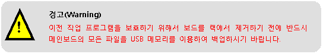
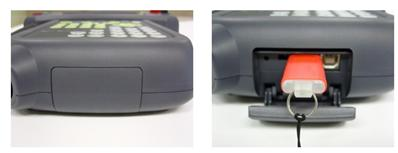
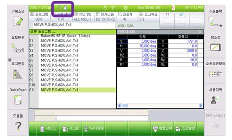
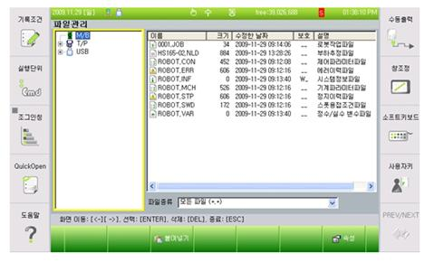
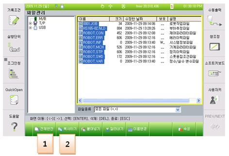
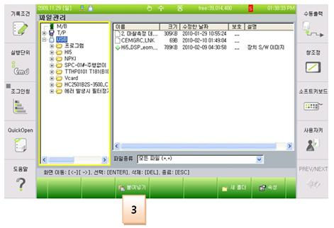
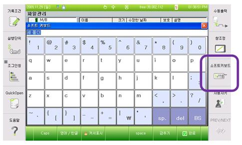
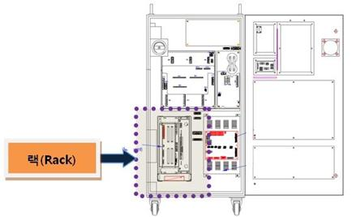

개 요
메인보드와 서보보드간 통신이상이나 급격한 모션변화에 의해서 에러가 발생할 수 있습니다. 보드간 통신 문제가 발생하면 정상적인 지령이 메인보드에서 서보보드로 전달되지 못하며, 이때 잘못된 지령으로 로봇이 이상 동작을 할 수 있으므로 에러를 발생시키고 로봇을 정지시킵니다. 또한 급격한 모션의 경우 구동장치가 위치 지령을 추종하지 못하는 경우가 발생되므로 에러를 발생시키고 로봇을 정지시킵니다.
원인 및 점검방법
|
1. 메인보드와 서보보드가 올바로 설치되어 있는지 점검하십시오. 1) 보드가 올바르게 설치되어 있는지 점검하십시오. 2) 보드 이상여부를 점검하십시오.
2. 로봇이 급격하게 동작하는 작업 프로그램이 있는지 점검하십시오.
|
1. 메인보드와 서보보드가 올바르게 설치되어 있는지 점검하십시오.
메인보드와 서보보드가 랙에 올바로 설치되어 있지 않거나 보드에 문제가 있으면 통신에 문제가 되어 에러가 발생할 수 있습니다.

USB 메모리에 메인보드 파일을 백업하는 방법은 다음과 같습니다.

그림 1. TP에 USB 삽입하는 방법
USB가 TP에서 인식되면 화면 위에 다음과 같은 아이콘으로 표시됩니다.

파일을 백업하기 위해서,
1) 서비스
2) 5. 파일관리
로 들어가면 윈도우에서 탐색기와 같은 화면이 보여집니다.

여기서 M/B에 보여지는 파일을 복사하여 USB에 넣으시면 됩니다.


USB에 윈도우 탐색기와 같이 새 폴더를 만들 수도 있으며, 소프트키보드를 사용하여 폴더 이름을 변경할 수 도 있습니다.

1) 보드가 올바르게 설치되어 있는지 점검하십시오.
메인보드와 서보보드를 랙에서 제거한 후 다시 설치하시기 바랍니다.

그림 2. 제어기 내부 랙 위치
2) 보드 이상여부를 점검하십시오.
보드 이상 여부를 판단하기 위해서 보드 교체를 하시기 바랍니다.
2. 로봇이 급격하게 동작하는 작업 프로그램이 있는지 점검하십시오.
로봇 동작 중 급격하게 모션이 변하는 구간에서 에러가 발생하는지 확인하십시오. 만약, 급격한 모션 중에 에러가 발생한다면 작업 프로그램의 수정이 필요합니다. 급격한 모션에서 에러가 발생하는 원인은 다음과 같습니다. 작업 프로그램을 수행할 때 짧은 구간을 이동하면서 불가피하게 로봇의 자세가 많이 틀어지는 경우가 있습니다. 이 때, 로봇의 축 속도가 갑자기 높아지게 되고 이를 서보보드에서 추종하지 못할 경우 에러가 발생하게 됩니다. 해결하는 방법은 자세가 급격히 변하는 지점의 티칭 포인트를 수정하거나 로봇 자세를 바꾸어 주면 됩니다.